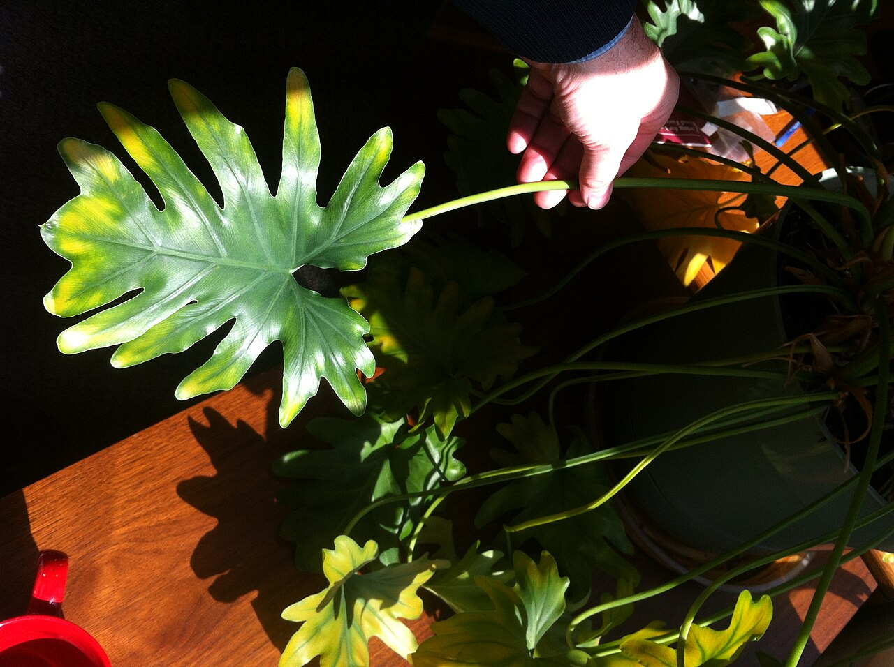
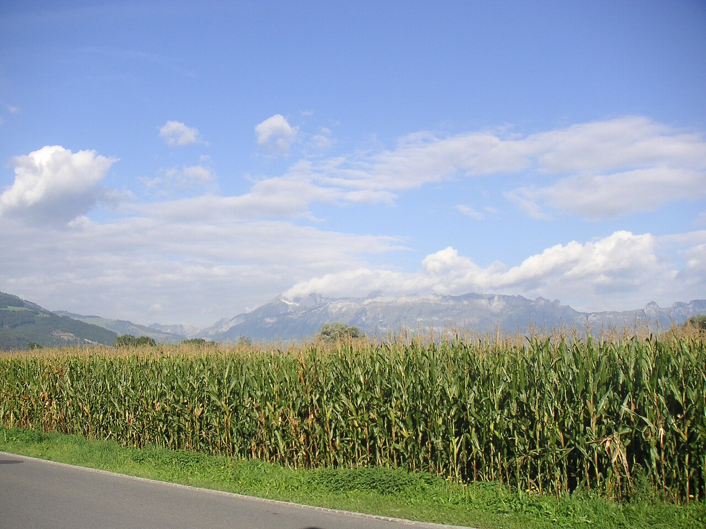

空日
からび / karabi
空、そして日。
二つの文字が並ぶと、どこか明るく、開けた景色が浮かびます。
朝は淡く、昼は澄んで、夕方にはやさしく色づく空。
その傍らで、カップを手に過ごす時間をイメージして、このページをつくりました。
※店名の由来は取材のうえ、正しい内容に差し替えます。上記は店名から連想したイメージです。

過ごし方のイメージ
一般的なカフェの利用シーンを、時間帯ごとに描いたイメージです。
morning一日のはじまりに、静かな光の中でひと息。
noon窓際で本を開いたり、ゆっくりと一杯の時間を楽しんだり。
dusk空の色が変わるのを眺めながら、おしゃべりの続きを。

お店からのお知らせ
店主からのメッセージやこだわりは、現在準備中です。ご紹介できる内容がそろい次第、掲載します。
